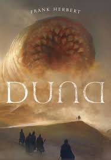
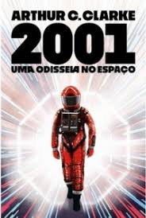
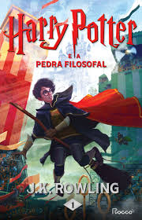
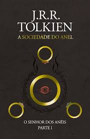

Ficção científica
Duna - Frank Herbert

Um planeta completamente desértico, onde a água vale mais do que o ouro e uma substância rara chamada “melange” – ou a especiaria – é a coisa mais valiosa do universo. É nesse cenário que se passa Duna, no planeta Arrakis. Mas calma, isso é só o começo.
A história gira em torno de Paul Atreides, um jovem herdeiro de uma das casas nobres mais poderosas do Império. Quando sua família recebe o controle de Arrakis, isso parece uma grande honra. Mas, na prática, é uma armadilha.
O planeta, embora vital por causa da especiaria (que garante habilidades mentais e prolonga a vida), é hostil, traiçoeiro e disputado por diversas forças, principalmente pelos inimigos mortais da Casa Atreides, os Harkonnen.
Conforme Paul se adapta ao ambiente de Arrakis e entra em contato com os Fremen – o povo nativo do planeta – ele começa a descobrir que pode ter um papel muito maior nessa história do que jamais imaginou.
2001: Uma Odisséia no Espaço - Arthur C. Clarke

Nos primórdios da humanidade, quando a fome e os predadores ameaçavam a raça humana, chega à Terra um objeto inusitado, inacessível à limitada compreensão da mente pré-histórica, mas que influencia os homens a descobrir coisas que permitem a sua própria evolução.
Milhões de anos depois, a descoberta de um monólito soterrado na Lua deixa os cientistas perplexos. Para investigar esse mistério, a Terra envia ao espaço uma equipe altamente treinada e HAL 9000, uma inteligência artificial responsável pelo funcionamento da nave e pela segurança dos tripulantes. Porém, o surgimento de pequenas falhas levanta a suspeita de que há algo errado com a missão.
Fantasia
Harry Potter - J.K. Rowling

Harry Potter é um garoto cujos pais, feiticeiros, foram assassinados por um poderosíssimo bruxo quando ele ainda era um bebê. Ele foi levado, então, para a casa dos tios que nada tinham a ver com o sobrenatural. Pelo contrário. Até os 10 anos, Harry foi uma espécie de gata borralheira: maltratado pelos tios, herdava roupas velhas do primo gorducho, tinha óculos remendados e era tratado como um estorvo.
No dia de seu aniversário de 11 anos, descobre sua verdadeira história e seu destino: ser um aprendiz de feiticeiro até o dia em que terá que enfrentar a pior força do mal, o homem que assassinou seus pais.
A fábula, recheada de fantasmas, paredes que falam, caldeirões, sapos, unicórnios, dragões e gigantes, não é, entretanto, apenas um passatempo.
Livro 1: A Sociedade do anel - J.R.R. Tolkien

Em A Sociedade do Anel, conhecemos Frodo Bolseiro, um hobbit que herda de seu tio Bilbo um anel aparentemente comum. O mago Gandalf logo revela que aquele é o Um Anel, forjado pelo Senhor do Escuro, Sauron, para dominar toda a Terra Média. Com o objetivo de destruir o anel no fogo da Montanha da Perdição, onde foi criado, forma-se a Sociedade do Anel.
O grupo composto por hobbits, um anão, um elfo, dois homens e um mago inicia uma perigosa jornada repleta de desafios e inimigos sombrios.